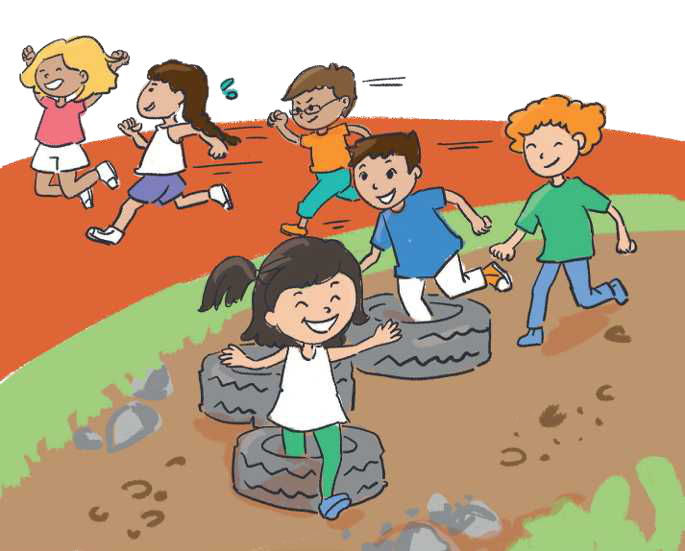

TEMATIKA 6: MEDIET
4.FLETUSHKA JONË
(VEPRIMTARI PRAKTIKE)

Në këtë orë veprimtarie ju do të krijoni fletushkën e arritjeve të klasës suaj. Atë mund ta punoni në kompjuter ose në letër dhe mund ta prezantoni para klasës sipas mënyrës që do ta prezantoni.